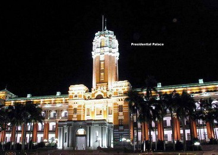
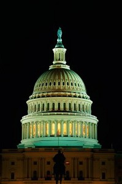
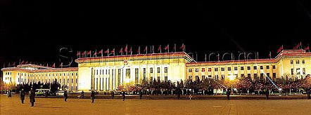
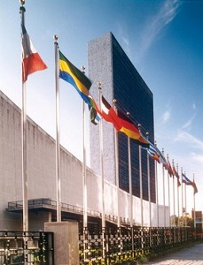
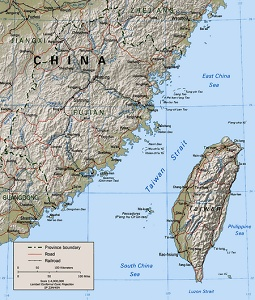

台海会发生战争吗？
冯冯
台湾与大陆两岸关系紧张，成为国际关注的焦点，两岸会爆发战争吗？很多人纷纷提出此一疑问。这里是以一个海外的外行人分析情况。
一. 一般认为台湾的独立意识愈来愈高涨，陈水扁当选下总统之后，虽然试图修改民进党 纲，要删除“独立”与“台湾共和国”字样，以求减少对中国当局的挑衅刺激，可是提议并未获得民进党大会通过。即使或能通过，也仍未删除“台湾是主权国家”的字样，依然是含有强烈的脱离中国的意识，当然不会获得中国当局认可。中国当局一贯表示“只有一个中国，台湾是中国国土的一部份”，不容许有任何脱离或分裂。 中国当局多次重申要统一的立场。誓必收回台湾省，以完全统一大业，断不容许台湾独立，更不容许任何外国干预中国的统一，倘有外国以军力干预，中国誓必以武力抵抗，不惜对之作战。
 二.陈水扁当选后表示愿意访问中国大陆谈判和平。但是，请问他以什么身份访问呢？以“中华民国总统当选人”？或“私人”身份？中国会接受他的“总统”身份吗？或“党领”身份？他可降格为“地方首长当选人”身份吗？看来阿扁访问中国只是摆姿态而已。不可能成行的。 纵然成行，也谈不出结果来。他也不会接受中国的条件以任何方式将台湾降格为自治特区或自治省，他也不肯降格做地方行政首长。他会坚持台湾与中国是政体同等的国家，中国会接受吗？反过来看，中国的国家主席也不可能访台，所谓两岸“元首互访”，看来是不太可能的。要谈判，还是由第三级的双方代表出面（海基会之 类）也谈不出什么突破的，因为两岸各持成见立场，互不相让──中国非要统一不可，台湾非要独立或独立自为主权国家不可。
 三.台湾一般人迷信美国军力支持，认为美军必会协防台湾，甚至助其攻击中国大陆。所以台独份子有恃无恐，认为中国畏美国，断不敢军事攻取台湾。美国太平洋舰队司令官在日本的谈 话，称美军力量足以保护台湾相当时间，此语对台湾人是一颗定心丸。但是，一个军人的发言，并不能代表美国政府，只代表他个人意见而已。作战与否，必须听从国会的决定与总统命令。他无权擅自对华作战。他所说，只是就军力而言，事实上，美国的军力，也已经分散于太多战场：中东、伊拉克、南斯拉夫......各战场已经使美军力量分薄了，还有，美国国内普遍反战，人民不愿再堕入外战泥沼，不愿子弟丧命异 国，美国政府不可能因台湾而对中国作战，非但因民心反战，也由于顾及中国广大的市场。中国地广人多，美军能入那么辽阔的战场吗？何况中国现有的长程导弹，射程已可达美国本土西岸，倘使美军助台湾攻击中国大陆，中国的洲际飞弹也有可能突袭中途岛、关岛、冲绳、珍珠港，甚至西雅图、圣地牙哥......各地的美军基地。美国当然也可用洲际飞弹空袭西安与新彊的核武基地，彼此两败俱伤，牺牲至大，中 美双方难免不无此种战，却必会尽力避免实施。看来美国支持台湾，是有限度的，不致 于出兵派军助战，顶多只是派舰队到海峡耀武扬威，也不敢进入台湾海峡的，（一进入可能就被中国飞弹炸沉）。美国最大的军援可能只是对台湾出售飞弹与核武，派一些技术顾问驻台湾指导装配，或者也派军事顾问参与台湾国防计划，但是，绝不可能有诺曼地式的登陆武力，否则，就会引起世界大战。美、日、台、加、澳， 都因之而卷入大战，另一边中、俄、乌、伊拉克、北韩、越南、印度、东欧......大战与核战都 起，美国不致于那么笨来引起世界大战。看来，美国军援台湾是不智的，可能性很低．台湾人仍然迷信美国人会为台湾卖命，未免太天真！
 四.中俄已有军事联盟，中国无后顾之忧可以调动百万大军到褔建，随时登陆台湾，又看透美国不敢发动大战，所 以，中国尽可放心武力收回台湾。美国纵然抗议或恐吓，终不敢以武力对华作战，美国最多只能做经济封锁中国，但是现代与一九五０年代不同，经济封锁将收效不大，禁运也无效，中国可以经俄罗斯与中亚细亚对外贸易，不必靠海运，看来，中国尽可大胆安心武力解放台湾，最佳时机是当前的几个月。统一是中国一贯的政策 与内政，美国无权干预，也不敢以武力干预。中国攻台，战争可能在五天之内解决，收回台湾，美国抗议无效，过一阵子，也只好承认，以免失去中国与台湾的广大市场经济利益，就如她接受香港回归中国一样。中国当局当然看透美国，知道美国是最现实的生意人，随时会看风转舵，中国尽可放心攻取台湾，不怕后患效应，因 为它的效应不会长久。
 五.二十一世纪是全世界各地的民族自决意识大爆的时代，几乎任何国家地区，都有民族自决要求独立，不是民族的，也要搞出地区独立。台湾的独立份子，对海外声称台湾人不是中国人，台湾人是另一个民族，这是强词夺理之词，可是吸引了半数台湾人民投票把民进党捧上了 台，他们误以为独立之后，成为一个主权国家，就不怕中国收回台湾。他们没注意到，纵然台湾独立得到联合国大多数国家承认，也还过不了安理会这一关。中国是安理会理事之一，它只须一票“否决”，就可以推翻联合国大会的决定。中国一票就可以否决了台湾独立，这就怪当年老蒋叫中华民国退出安理会，将权柄拱手让给了中共。
六.民进党在台得势，终必搞独立，党纲怎样改，也不改本质。中国民主党电贺民进党，显然也有意挂，将来两党联手，在大陆大搞民主 选举，煽动各省各地区投票独立以推翻现在的执政党。中国当局可能也看到这一点，当然不会容许民进党的独立意识滋长及带进中国大陆各省弄成中国四分五裂，终于为外国所乘。所以中国当局决心统一台湾，是为了防微杜渐，巩固中国国土的完整统一，台湾人没看到此点，只看到台湾本岛的利益，或者竟以为阿扁低姿态可以 获得中国当局接受而不收回台湾，这真是想得太短见了。其实，无论阿扁态度如何，无论台湾是否独立，中国当局也还是一定统一台湾的，以求一劳永逸，解决台湾问题，免得台湾在将来投入美国或日本。中国已经顺利收回了港澳，并无战争，相信中国也尽量运用和平方式收回台湾。问题是，台湾不肯统一，或者竟有人主张由 台湾来统一中国大陆，取消人民共和国国号，改为中华民国，这真是异想天开，又回到国民党老口号“反攻大陆”了。怎么看来看去，台湾都不会接受中国的和平接收，中国也不会让步给台湾去独立。中国必然坚决重申对台湾的主权，怎么看，台湾战争都是随时一触即发的、不可能避免，大概总要被中国武力打败了，台湾才会 投降。
 七.谈判决裂之后，中国很可能用闪电战略与战术，在拂晓之前，以五六枚长程飞弹，同时攻击台湾的军事基地。左营海军军港舰队、冈山空军基地两千战机，台中飞弹基地、林口飞弹基地、龙潭陆军军团、花莲海军基地、苗栗装甲兵基地......五小时之后，中国解放军空军与庞大舰队扺达台湾西岸，炮轰各基地与地面部队，运出的登陆舰队与数千渔船，载来了五十万解放军与民兵，登陆台湾，占据要点。台湾军队以台湾人为主，大多数不反抗，战争在几天之内结束。台湾政府宣布投降，或者有零星扺抗，甚至有 导弹轰炸香港，但都无补。然后，中国政府向全世界宣告统一成功，从此没有“中华民国”国号，更无“台湾共和国”。也许解散民进党，以后就是大力发展新经济，结合大陆与台湾的人力，科技与财富，成为世界一级富强国家，外国无论美俄，都不敢再欺负中国。以上的战争推想，当不致是胡猜，可能早已是中美台日各方 的共识，身在海外，看得清楚，只有台湾岛内仍有自大狂“财大气粗”、“夜郎自大”，自以为有恃无恐，终不免走上战争之途。
海外华侨，无不盼望两岸能得和平统一，勿启战端以免酿成 巨大战祸及生灵涂炭。希望台湾岛内，也努力以求和平，勿以短视与狭窄心态一意孤行，引起战祸。
原载《佛网》网站
2000 年 ── 2002 年